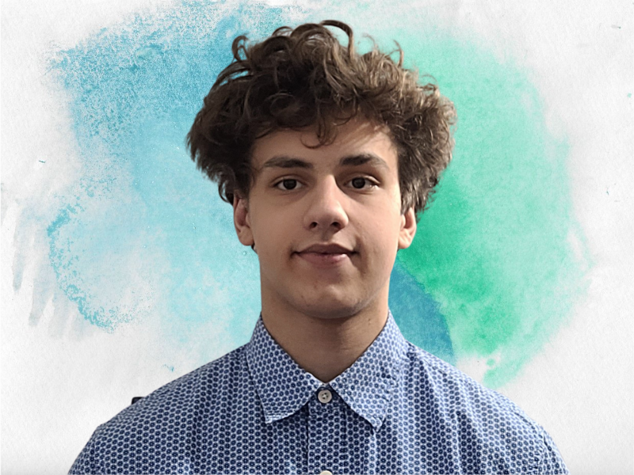

Thank you for your time and intrest in me, here is brief summary about me.
Hello, I'm Ivan Petrenko, originally from Ukraine and fluent in Russian, English, and Ukrainian. My family moved to the United States due to our homeland's conflict, and I am now a U.S. citizen. Currently, I'm working towards a Bachelor of Science degree in Computer Science at the University of Washington's Allen School, with an expected graduation date in June 2027. My future plans include pursuing a Master of Science in Computer Science at the same university.
I've consistently maintained strong academic performance while dedicating 20 hours per week to support my family's financial needs since the age of 16, showcasing my commitment and resilience. My proficiency is evident in my portfolio, resume, and various personal projects, all of which I've diligently undertaken. I'm eager to bring the same dedication and effectiveness to any future challenges.